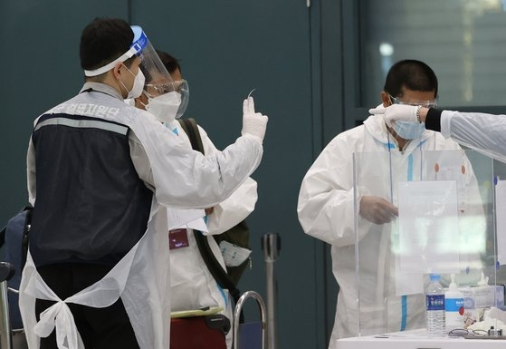
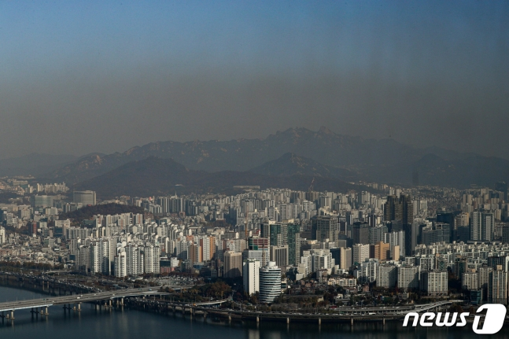
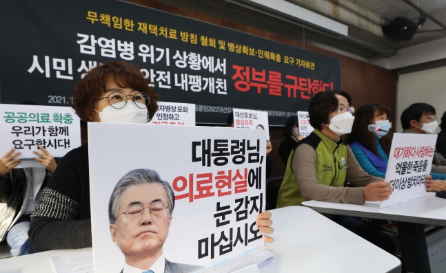
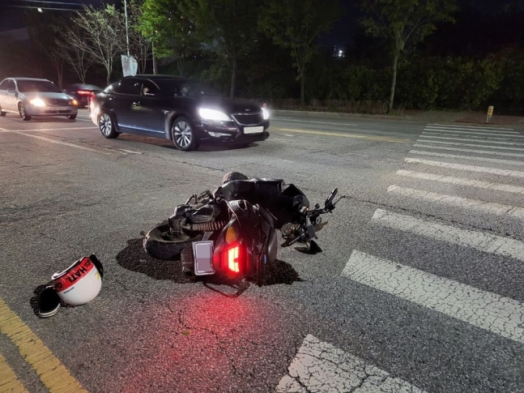
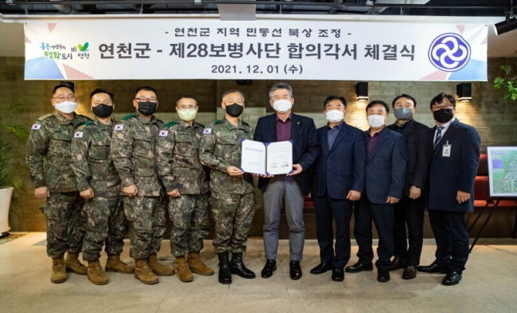

대체 텍스트
사회 주요뉴스

'동선 거짓말' 오미크론 부부 태운 지인, 400명 교회 예배 갔다
코로나19 변이 바이러스인 오미크론의 국내 첫 확진 사례로 기록된 인천의 목사 부부가 방역 당국의 역학조사 과정에서 거짓 진술을 한 것으로 나타났다...

한중일 환경장관, 환경협력 위해 머리 맞댄다…7일 영상회의 개최
제22차 환경장관회의…탄소중립 달성·생물다양성 회복 등 전반 협력 강화 논의, 중국 측과 미세먼지 관리 협력 내실화 위한 협력 강화 방안도 논의 예정

시민단체들 “재택치료는 치료 아닌 방치”
시민단체들이 2일 오전 서울 종로구 참여연대 아름드리홀에서 열린 '무책임한 재택치료 방침 철회 및 병상인력 확충 요구 기자회견'을 열었다

경찰보다 나은 누나… 동생 뺑소니 당하자 당근마켓으로 범인 잡아
동생이 오토바이 뺑소니 사고를 당하자 누나가 중고거래사이트인 ‘당근마켓’을 이용해 범인을 잡았다는 사연이 알려졌다.

연천 민통선, 3년 안에 26㎢ 축소될 듯
연천군-육군28사단 합의각서 체결, 민통선 총면적 237㎢ 중 11% 해제
대체 텍스트